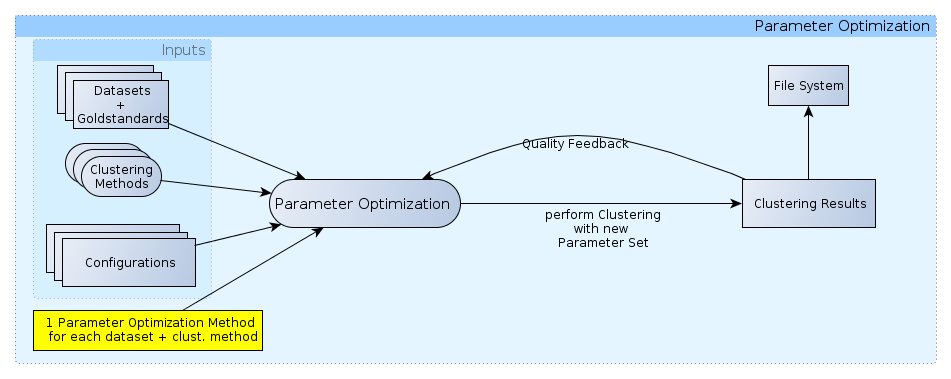

Parameter Optimization Methods - Finding Good Clustering Parameters¶

A schema of parameter optimization in ClustEval
The backend can perform automatized and autonomous optimization of parameters of clustering methods. This is an iterative procedure where the backend assesses qualities of clustering results of the last iteration and adapts the parameter for the next iteration in order to find optimal parameters for the method on the given data. The parameter optimization method determines the following aspects:
- the number of iterations of the optimization process
- the parameter sets evaluated
- the handling of diverging iterations
- the storage of the iteration results in RAM
Available Parameter Optimization Methods¶
ClustEval ships with a standard set of parameter optimization methods. You can find a list here
Extending ClustEval¶
Check Parameter Optimization Methods for more information on how to extend the framework by new parameter optimization methods.